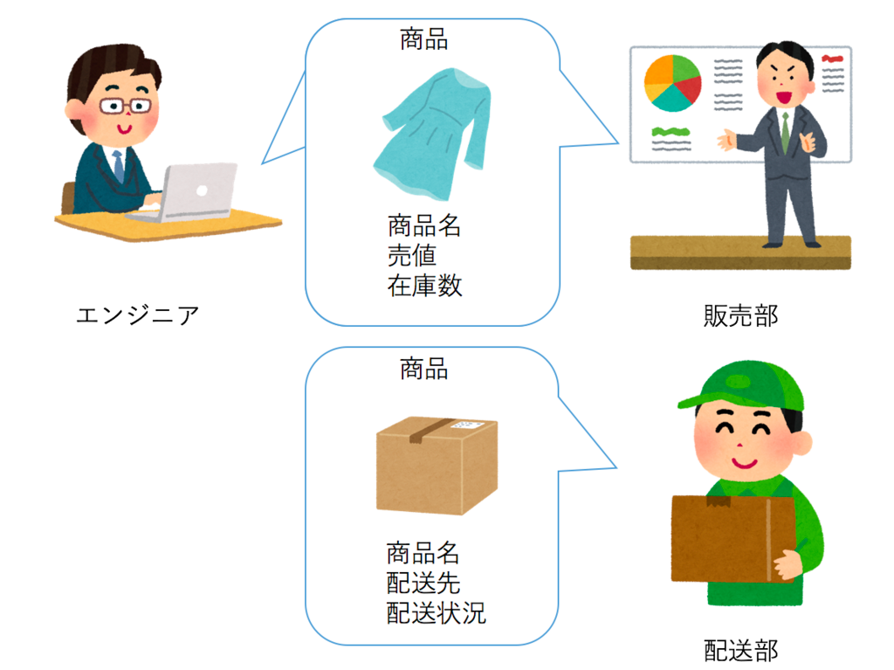

Go DDD Package Structure Pattern
Overview
本記事は Web アプリケーションを作る場合の Go のパッケージストラクチャについての考察である。
リポジトリのアーキテクチャは拡張性や認識容易性、結合度・凝縮度などに影響する。ビジネスの変化に迅速に柔軟に対応するサービスを構築するためには、エンジニア自身もビジネスドメインを理解し DDD をベースとしたアプローチが良いという考えが最近より強くなってきた。 DDD をプログラムで表現するのはレイヤードアーキテクチャ、特に オニオンアーキテクチャ が良いと思うが、実践ドメイン駆動設計 や Clean Architecture などの本を見たら分かる通り、レイヤード系のアーキテクチャは基本的に Java のような言語を想定して記述されている。
Go はそういった言語とはパッケージの思想が異なるため、レイヤーの思想を安易に表現すると返って扱いづらい。Go は Goの特徴を考慮した形で実現するのが良いだろう。
なお、ここで書かれている内容は私が関わる組織でも必ずしも実践されているわけではない。あくまで個人的な考察である。
本記事を理解するために必要な知識
- Go の知識
- アーキテクチャの知識
- DDD
- Clean Architecture
- Onion Architecture
- 参考となる本
- Clean Architecture
- アジャイルソフトウェア開発の奥義
- Domain-Driven Design: Tackling Complexity in the Heart of Software
- 実践ドメイン駆動設計
- Patterns of Enterprise Application Architecture (PoEAA)
前提条件
DDD を前提とした場合、重要視したいのは SOLID原則、特に single-responsibility principle を重視したい。つまり、凝縮度を高めるためビジネスドメインにおける関心事を一定箇所(ドメインモデル)に閉じ込め、変更時にはその箇所を注目したら良く、同時に他のドメインへ影響を与えないようにしたい。
一方で、ソフトウェア開発の原則で同様に言われる DRY (Don't repeat yourself )原則はある意味緩める必要がある。
例えば、商品(item)といった場合に販売ドメインと配送ドメインでは関心事が異なる。販売ドメインでは商品の価格や状態が関心事だが、配送ドメインにおいては同じ「商品」と言ったときでも配送先や配送状況など関心事が異なる。
引用: https://little-hands.hatenablog.com/entry/2017/11/28/bouded-context-concept 
この時、DRY を意識して商品という概念(Entity)を使いまわそうとすると、売値・状態・配送先・配送状態など異なるドメインの関心事を全て詰め込み、状況次第で利用するフィールドを変えるというアプローチになる。
概念の異なるドメインでリソースを共有すると結合度が上がり、一方のドメインでの変更がもう一方のドメインへ意図せず影響する可能性が高まる。
例えば商品販売の管理のため内部的な商品名の名付けルールを変えたら配送時にお客様への表示商品名のルールまで変わってしまうなどである。
こうなると、プログラムの複雑性が高い影響で各ドメインの身動きが取りづらくなり、バグ発生率が高まり変更の実現のサイクルが遅くなってしまう。
そこで、多少繰り返し(のような見え方)になろうとも、ドメインごとに独自のリソースを設け、変更の影響範囲を狭め、注目するべき部分を閉じ込めることを重視したい。上記例では販売・配送ごとに独自の商品モデルを定義し、各々に必要な情報だけを認知できる形にする形である。
Go における DDD の実現
最初に結論を紹介すると、Go では以下のような形が良いのではないかと現時点では考えている。まずは説明前に実際のストラクチャを見て欲しい。
当然ながらここで例示するものが正解というわけではないし、機能の追加や時間の経過によって有用な形は代わり得る。
提案アーキテクチャ
.
├── boundedcontextA
│ └── usecase // define application usecase
│ ├── subdomainA
│ └── a_usecase.go
│ └── b_usecase.go
│ ├── subdomainB
│ └── c_usecase.go
│ └── domain // define domain model
│ └── subdomainA
│ └── model.go
│ └── repository.go // only interface
│ └── service.go
│ └── subdomainB
│ └── model.go
│ └── repository.go
│ └── service.go
│ └── presentation // API endpoint
│ └── a_handler.go
│ └── b_handler.go
│ └── resolver
│ └── resolver.go
│ └── infrastructure // impliment repository
│ └── datastore
│ └── externalservice
│ └── pkg // general lib for the boundary
│ └── apiclient
│ └── shareditem
│ └── trace
│ └── go.mod
├── boundedcontextB
│ └── usecase
│ └── ...
│ └── domain
│ └── ...
│ └── presentation
│ └── ...
│ └── infrastructure
│ └── ...
│ └── pkg
│ └── ...
│ └── go.mod
├── boundedcontextC
│ └── ...
├── server
│ └── middleware // common
│ └── main.go
├── go.mod
基本的な考え方は以下である。
方針
- 複数の境界やドメインを同じサービスで提供し得る構成で考える
- struct や interface のを使う側における見え方を意識する
- トップレベル以下にコンテキストの境界毎にディレクトリを作る
- 小ディレクトリに近いストラクチャを持つモジュラモノリスのような構造
- サービスとしてモノリスで提供する前提だが、必要に応じてマイクロサービスとしてデプロイしたり、リポジトリの分離の容易さを意識
補足
- ファイル自体はわかりやすさのために定義しているが、別ファイルを設けることは必須ではなく、また同様の概念(e.g. model)を複数ファイルに分けることもある
- 必要に応じて親・子ディレクトリを追加で設けて柔軟に変更する
- boundary は
salesやdeliveryのようなビジネスドメイン的な概念もあればauthenticationなどのシステム上必要な概念もありえる - boundary 毎のモジュール化は必須ではない
提案モデルを深掘りする前に、レイヤードアーキテクチャを忠実に再現した場合にどうなるのかを例示し、追って違いを交えつつ説明する。
素直なレイヤードアーキテクチャを Go で表現すると以下のようになる。
.
├── usecase
│ └── a_usecase.go
│ └── b_usecase.go
├── domain
│ ├── model
│ ├── repository
│ │ └── a_repository.go // interface
│ └── service
├── infrastructure
│ └── persistence
│ └── database
│ └── a_repository.go // impl
├── presentation
│ └── api
│ └── server
│ ├── auth
│ ├── handler
│ │ ├── a_handler.go
│ │ ├── b_handler.go
│ │ └── yyy_handler.go
│ ├── middleware
│ └── router
└── go.mod
以下で提案アーキテクチャのポイントを説明する。
ポイント
各レイヤー単位でドメインを考慮したパッケージを作る
提案の例ではレイヤー毎にフラットなディレクトリを作らないこと、またレイヤー毎に近しい要素は同じパッケージ以下に置く事を意識している。
具体的には、model.go や repository.go を (サブ)ドメイン (以下サブドメインも全てドメインと便宜上表現する) 直下に配置している。
こうすることで {domain_name}.{element_name} という見え方を表現できる。
sale というドメイン以下で item の出品と考えると以下のように表現でき、private なフィールドの公開範囲も制限が可能である
- domain/sale/
- sale.Item
- sale.Repository
- usecase/sale/
- sale.PublishUsecase
- sale.DropUsecase
他の言語ではパッケージの利用時の見え方は意識しなくても良いものもあるのだが、Go の場合は「パッケージ + 要素名」を利用時に参照することに加え、「パッケージ名は要素の名前に含めない」というプラクティス(✗ item.ItemRepository → ◯ item.Repository) もあるため、必然的に利用時のためのパッケージと要素の配置位置を意識する必要がある。
レイヤードアーキテクチャを素直に表現した場合、usecase や repository ディレクトリ以下に全てのリポジトリのインターフェースが以下のように並べられる。
.
├── usecase
│ └── delivery_usecase.go
│ └── sale_usecase.go
├── domain
│ ├── model
│ └── delivery.go
│ └── item.go
│ └── sale.go
│ ├── repository
│ └── delivery.go
│ └── item.go
│ └── sale.go
この場合以下のような点で扱いづらさがある。
- レイヤーのディレクトリ以下に平坦にファイルを並べると特定のドメインのみに必要なプライベートな要素が他のドメインにも見える
- リソースを配置するディレクトリがより分散しやすくなる
- 凝縮度の低下
- 名付けで 「何であるのか(e.g. repository)」が要素でなく package の方に寄せられる
- repository.Delivery、repository.Item <> delivery.Repository、item.Repository
当然以下のようにレイヤー毎にサブディレクトリを設けることも考えられるが、特にドメイン周りで近しい要素間の循環参照が起きやすく、 import の複雑性を考えたくないため、model, repository (interface), service などは同一階層上で置いてしまった方が扱い易いと考える。
.
├── usecase
│ └── delivery
│ └── usecase.go
│ └── sale
│ └── usecase.go
├── domain
│ ├── model
│ └── delivery
│ └── delivery.go
│ └── item
│ └── item.go
│ └── sale
│ └── sale.go
│ ├── repository
│ └── delivery
│ └── delivery.go
│ └── item
│ └── item.go
│ └── sale
│ └── sale.go
│ ├── service
│ └── delivery
...
Bounded context によるモジュールの分離
提案では「境界づけられたコンテキスト」毎にトップディレクトリに配置し、それぞれをモジュール化し、各モジュールを server/main.go から参照する形を想定していた。
この形の利点としては以下である。
- 境界の異なるものは干渉しない
- リリース時に境界毎の変更を意識せずリリースタイミングを調整しやすい
- モジュール化していないとモノレポの場合、master (GitFlow なら develop)ブランチにマージすることは本番化を意味する(Feature Toggleなどを使っていない場合)が、モジュール化すると main.go の go.mod に含めない限り利用されない
- チームやプロダクトの成長に伴うサービスの分割がしやすい
- 境界毎にサービスとして完結した形にすることで main.go を追加するだけで別サービスとしてデプロイできる
- サービス規模が大きくなったなどでアクセスの分離がしやすい
- メンバー増加に伴い専用のチームを作りリポジトリを分離する場合でも対応が簡単
- レイヤー毎に分離されて配置されているとリポジトリ分離のためには複数箇所から関連リソースをかき集める必要がある
- 境界毎にサービスとして完結した形にすることで main.go を追加するだけで別サービスとしてデプロイできる
この方法には同時にいくつかの欠点も存在する
- モジュールとして分離すると、全体で利用したいライブラリ (共有カーネル等) をモジュール化してインポートする必要がある
- モジュール化していない場合は変更をそのまま参照できる
- サービスとしてのテストの手間
- go.work によりローカルで別モジュールの開発は簡単になったが、go.work は git 管理しない前提のため、実環境へデプロイするためには main.go の go.mod が tag でなくブランチを参照する必要がある。
おわりに
本記事では Go で DDD ベースの実装を行う場合のパッケージストラクチャの案を紹介した。
アプローチはチームの大きさやスキル間、サービスの特性によって変えるべきであり、例えばコンテキストを大きく捉えてサブドメインの構成要素を多くモデリングすることで細かくモジュールを分けないといった考え方もあるだろう。
また、今回のストラクチャを深掘りするとコンテキスト内でも saleitem (売るための商品) と solditem (売れた商品) のドメインを設け、それぞれ別のフィールドを持たせる方が扱いやすい場合もある。
一概に正解はないが、ポイントとしては Go では {domain_name}.{element_name} という利用者からの見え方を意識し、結合度を下げつつ凝縮度を高める設計をすると良いと考えている。